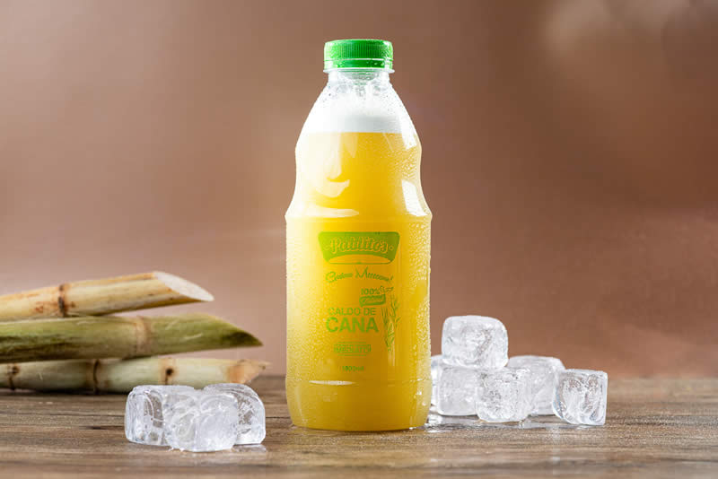
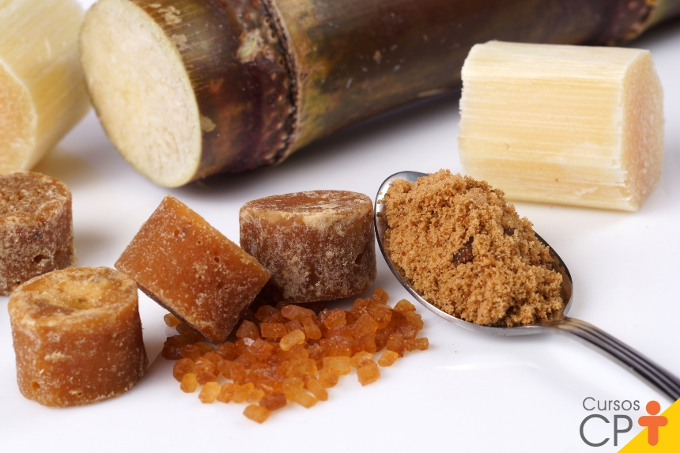
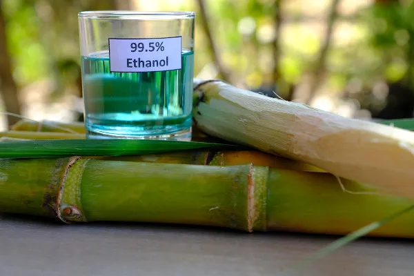

| Produto | Quantidade | Valor | Imagem do Produto | Processo de fabricação |
|---|---|---|---|---|
| Cana (picada) | 1 Kg | R$ 1,21 | |
A colheita da cana-de-açúcar é feita por máquinas que cortam a planta rente ao solo, removem as pontas e picam os colmos em pequenos pedaços. |
| Cana inteira | 10 Kg | R$ 12,10 | |
O corte e a venda de cana inteira em fardos é um processo manual voltado para ração animal, caldo de cana, cachaça artesanal ou mudas. O tr... |
| Caldo da Cana | 1 L | R$ 12,00 |  |
A produção do caldo de cana começa com a raspagem e lavagem dos colmos para remover impurezas. Em seguida, a cana passa pela moenda, onde é... |
| Cachaça da Cana | 1 L | R$ 15,00 | |
A cachaça é produzida a partir da fermentação do caldo de cana por leveduras, que transformam o açúcar em álcool. Esse líquido passa pela destilação no alambique para concentrar o álcool e, em seguida, a cachaça pode ser engarrafada imediatamente ou envelhecida em tonéis de madeira para aperfeiçoar seu sabor e aroma. |
| Rapadura | 1 Kg | R$ 8,00 |  |
A produção da rapadura começa com a fervura do caldo de cana em tacho aberto para evaporar a água e concentrar o açúcar. Quando atinge o ponto certo, a massa xaroposa é batida continuamente até engrossar e, em seguida, é despejada em fôrmas de madeira onde esfria, solidifica e ganha o seu formato tradicional. |
| Etanol | 2 L | R$ 20,00 |  |
A produção de etanol ocorre com a moagem da cana para extrair o caldo, que é fermentado por leveduras para transformar o açúcar em álcool. Em seguida, o líquido passa pela destilação para separar e concentrar o combustível, gerando o etanol hidratado ou anidro. |